Data-poor stock assessment with new EwE OM
Updated on July 19, 2022
11_Data_poor_stock_assessment_with_new_EwE_OM.RmdCase 0: stock assessment base run
- Case 0.1
- The correlation coefficient value between “true” biomass and estimated biomass of menhaden-like species is -0.39
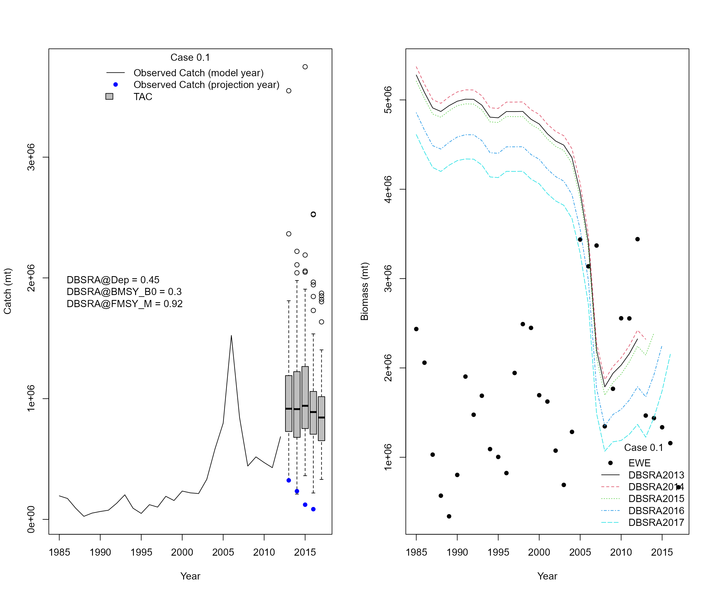
- Case 0.2
- The correlation coefficient value between “true” biomass and estimated biomass of menhaden-like species is -0.66
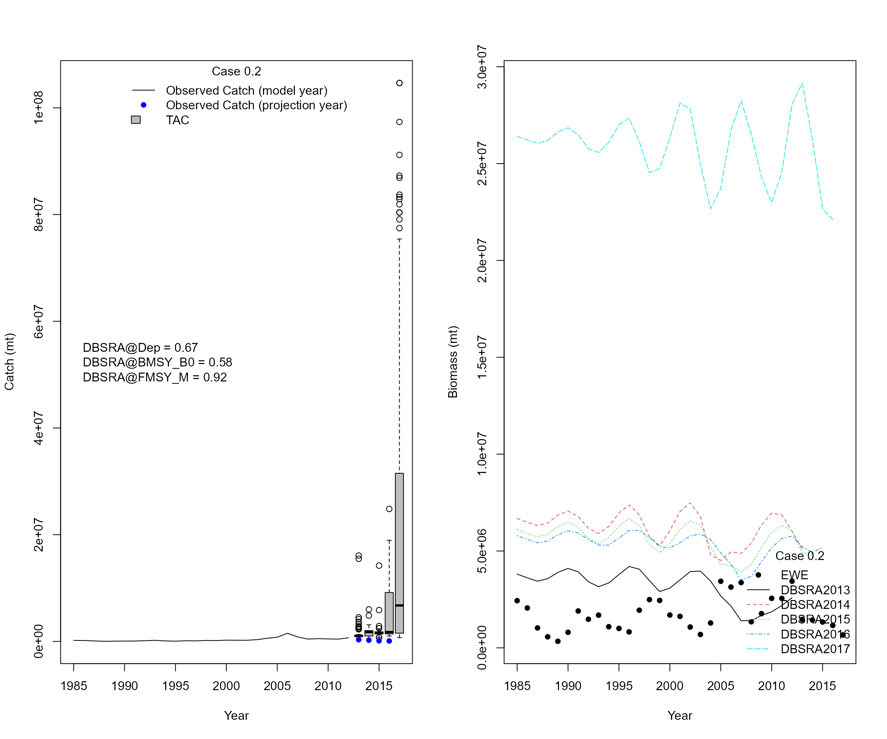
- Case 0.3
- Add 8 years of equilibrium catches (max catch) to the start of the catch
- Try a sequence of Dep (0.1 - 0.9 with interval of 0.05), BMSY_B0 (0.1 - 0.9 with interval of 0.05), and FMSY_M (0.1 - 2.0 with an interval of 0.05) and find the scenario that has the lowest sum of squared differences
- The correlation coefficient value between “true” biomass and estimated biomass of menhaden-like species is 0.59
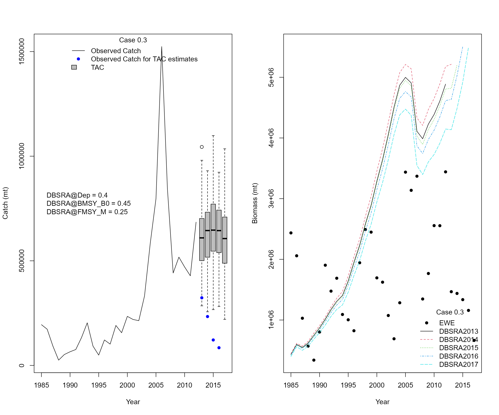
Linear regression models from cases 1 - 4 using “true” values from EwE
Case 1: Link Atlantic Multidecadal Oscillation Index with menhaden biomass estimates and adjust projections: AMO is an indicator of climate conditions and would affect recruitment variability of menhaden-like species
Case 2: Link Palmer drought severity index with menhaden biomass estimates and adjust projections: PSDI is a long-term indicator of drought conditions and it reflects river discharge and precipitation
Case 3: Link biomass of Striped bass from the EwE with menhaden biomass estimates and adjust projections because bass is a major predator
Case 4: Link fishing effort of menhaden with menhaden biomass estimates and adjust projections
Linear regression models from case 1 - 4 (Lag = 1)
- Slope values from linear regression models
| case | amo | bassB | pdsi | effort |
|---|---|---|---|---|
| True indices | 1200258.24* | 2.91* | 1006255.25* | 76771.33* |
Cases 1-4 are based on the settings from case 0.1
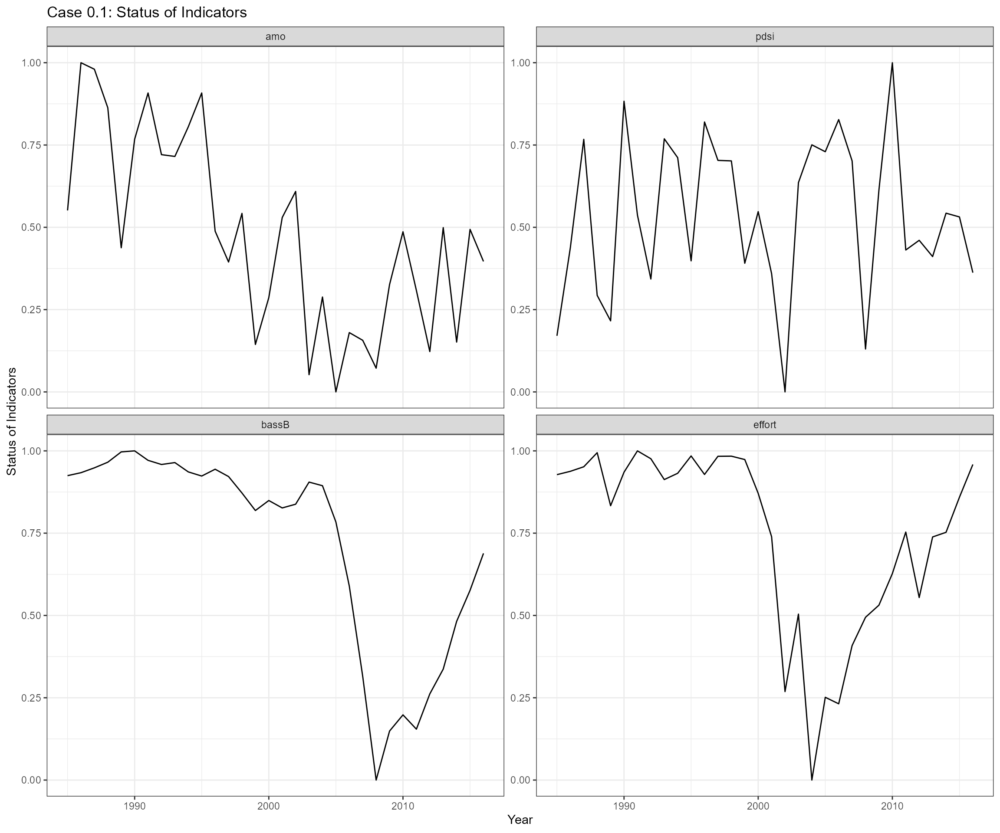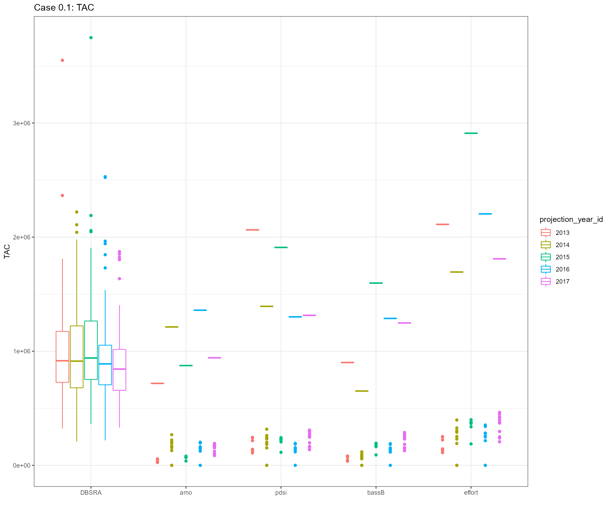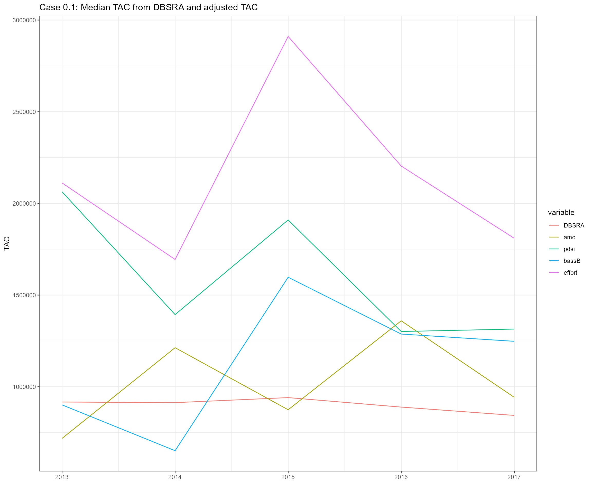
- Slope values from linear regression models
| case | projection_year | amo | pdsi | bassB | effort |
|---|---|---|---|---|---|
| 0.1 | 2013 | -1968376.05* | 942238.86* | -8.68* | 74216.52* |
| 0.1 | 2014 | -2102497.42* | 947758.77* | -8.92* | 71953.64* |
| 0.1 | 2015 | -2111314.4* | 953539.46* | -9.1* | 71998.71* |
| 0.1 | 2016 | -2181114.82* | 953518.36* | -9.39* | 72170.4* |
| 0.1 | 2017 | -2246410.93* | 955798.79* | -9.83* | 73267.27* |
Cases 1-4 are based on the settings from case 0.2
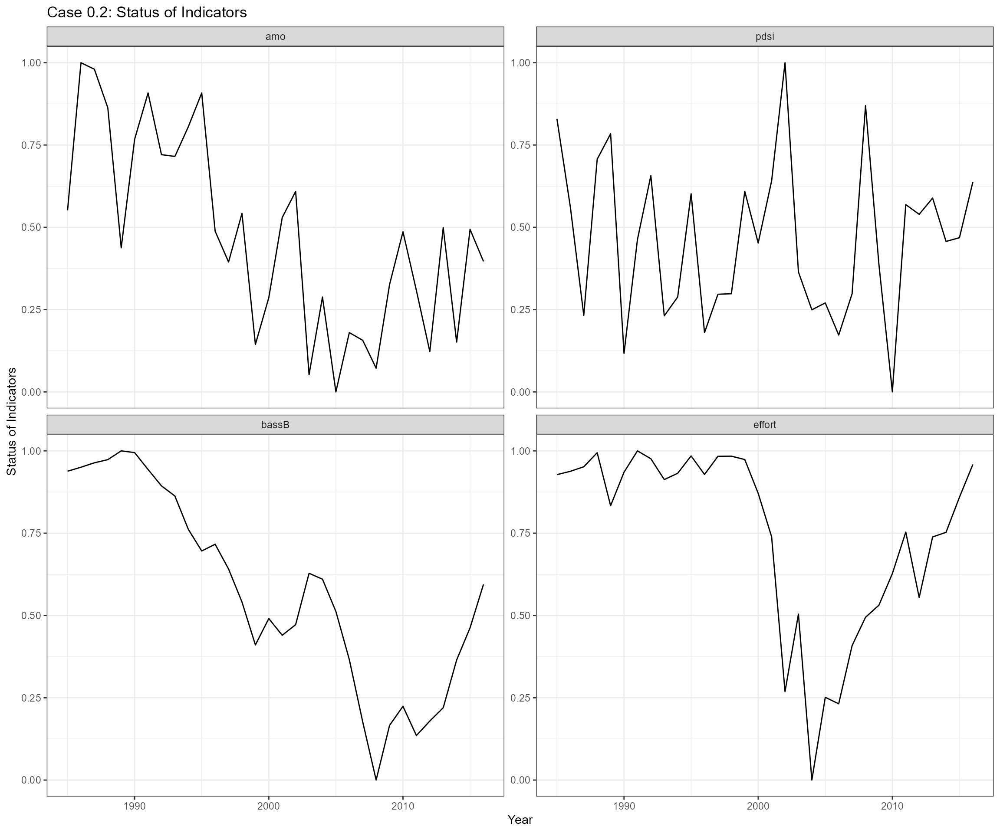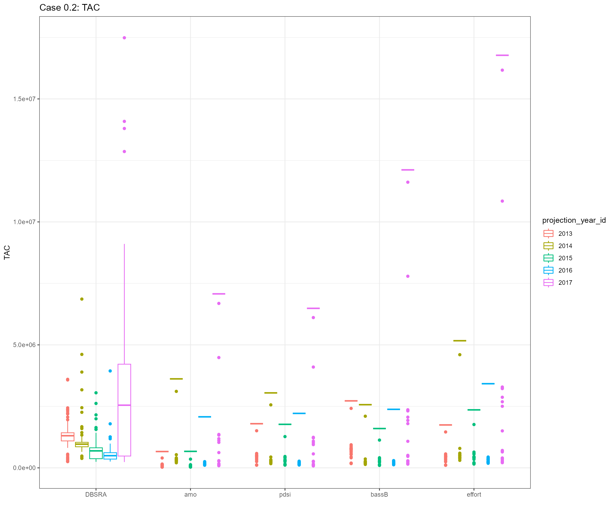
- Slope values from linear regression models
| case | projection_year | amo | pdsi | bassB | effort |
|---|---|---|---|---|---|
| 0.2 | 2013 | -1483574.59* | 942238.86* | -5.42* | 74216.52* |
| 0.2 | 2014 | -1243773.59* | 947758.77* | -1.58 | 71953.64* |
| 0.2 | 2015 | -1228228.22* | 953539.46* | -2.32 | 71998.71* |
| 0.2 | 2016 | -982266.01* | 953518.36* | -2.69* | 72170.4* |
| 0.2 | 2017 | -663625.52 | 955798.79* | -1.28 | 73267.27* |
Cases 1-4 are based on the settings from case 0.3
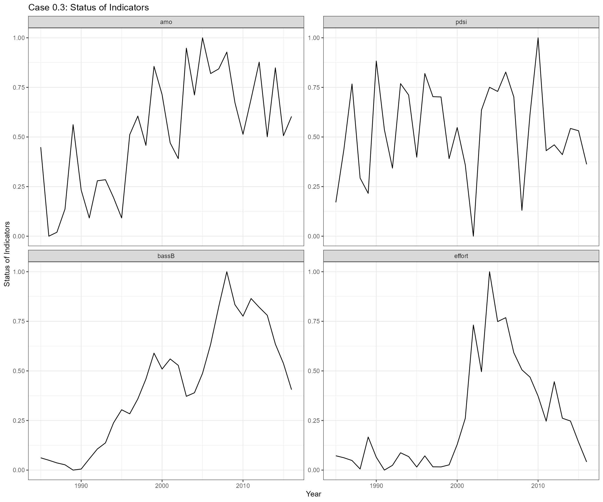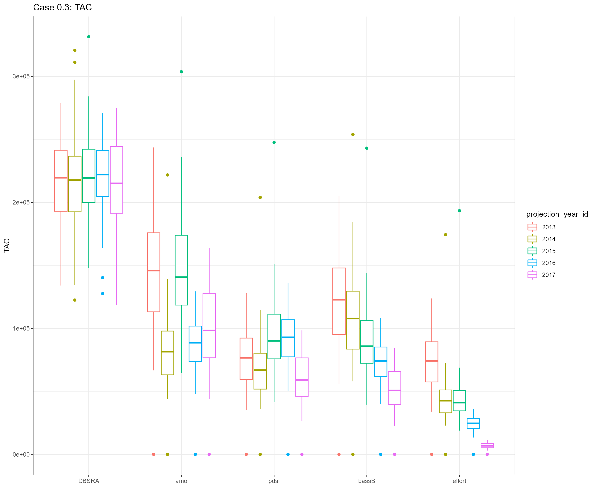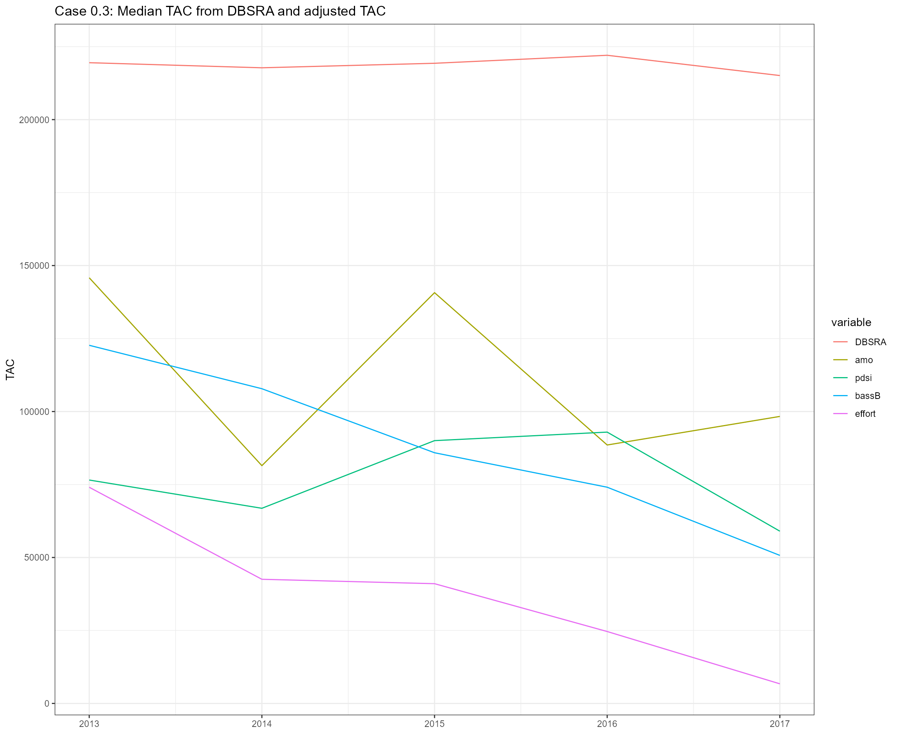
- Slope values from linear regression models
| case | projection_year | amo | pdsi | bassB | effort |
|---|---|---|---|---|---|
| 0.3 | 2013 | 2575456.53* | 942238.86* | 7.36* | 74216.52* |
| 0.3 | 2014 | 2232937.58* | 947758.77* | 6.13* | 71953.64* |
| 0.3 | 2015 | 2819158.22* | 953539.46* | 7.84* | 71998.71* |
| 0.3 | 2016 | 2671074.59* | 953518.36* | 7.58* | 72170.4* |
| 0.3 | 2017 | 2710315.23* | 955798.79* | 7.72* | 73267.27* |